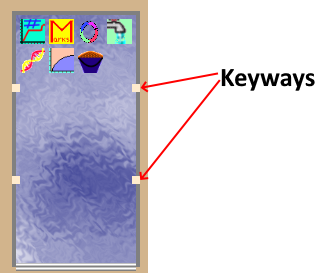
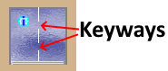

IShapeFactory
The IShapeFactory interface is used for rearing unit types. A typical hatchery might include numerous physical rearing units. These might be all the same shape, or several different shapes. The shape of the rearing unit is important for determining the volume, the behavior of the rearing unit in response to splitting, and other factors. Therefore, when the Hatchery Information System loads a hatchery, the Rearing Unit Business Object must create instances of the rearing units with the right shape. The IShapeFactory instance is what the Rearing Unit Business Object model uses to create an instance of any specific shape of rearing unit. The name of the interface comes from the fact that the object that implements the interface creates instances of IShape objects, which are generalized shapes for the physical rearing unit structures, while the actual dimensions of the structure are stored in the database. The factory can create as many shapes of any type as needed, which the Rearing Unit Business Object model then fleshes out with the dimensions from the database.
The IShapeFactory interface is the only plugin interface that is not loaded by the main Hatchery Information System program. Any object that implements IShapeFactory will be created and managed by the Rearing Unit Business Object, not the Hatchery Information System. A plugin that includes an object that implements the IShapeFactory can also include objects that include any of the other loadable plugins, since dlls holding plugins are all located in the same folder on the computer. Rearing Unit Business Object will instantiate the IShapeFactory object, while Hatchery Information System will instantiate the others.
Existing Plugins
Rectangular
The rectangular rearing unit is perhaps the most common type found at hatcheries. This type is a vertical sided rearing unit that can be divided in any location, and can have keyways placed wherever needed. The rectangular rearing unit forms the base for most vats and raceways.
Heath Stack
The Heath Stack is a stack of up to eight trays. The number of trays in this plugin can be set in the hatchery designer by the user when the hatchery is designed, but the number cannot exceed eight. Of course, two of these could be stacked atop one another to result in sixteen total trays, but they would be in two groups of eight. The Heath Stack is egg only and the individual trays cannot be divided.
Circular
The circular rearing unit comes in two flavors. The first is the raceway form, the second is the upweller form. Visually, the two are nearly identical, but the upweller can only hold eggs, whereas the raceway form can never hold eggs. Neither form can be divided, but the plugin could form the basis for divisible circular rearing units with fixed keyways.
Pond
The pond plugin is for a standard, vertically sided, indivisible, pond. This is not ideally suitable for use as an earthen pond, which would have sloped sides, but an earthen pond plugin would be trivial to make from this one. The pond plugin cannot be divided, and can’t hold eggs.
The pond need not be solely used as a pond. The same plugin could be used for any indivisible, vertically sided, container. Therefore, it could be used for coolers, transfer tanks, and any such thing that didn’t need any features beyond those that the pond offers.
Vertical Dual Pond
The vertical dual pond plugin is a pond with a central divider with fixed keyways. The vertical dual pond is a slight variation on the standard pond, as it is also vertically sided and can only be divided at the fixed keyways, which will divide it evenly in half. Water flows into both halves, typically. The vertical dual pond can only be divided at the fixed keyways.
Horizontal Dual Pond
The horizontal dual pond is a plugin for a vertically sided pond where the water flows through fixed gaps in the middle, which can be divided at fixed keyways. This is a pretty rare arrangement, as water flows into one pond, then into the next, which is not ideal for water quality, but the design is an obvious and very slight change from the Vertical Dual Pond. The horizontal dual pond can only be divided at the fixed keyways.
Quad Pond
The quad pond is a variation on the pond, in that it is a vertically sided pond with a cross-shaped structure in the middle with one or more fixed keyways in each side of the cross. This means that the whole area can be divided in half, in quadrants, or managed as an open pond. Dividing the quad pond can only be done at the fixed keyways, but this can allow fish to be held in a quarter of the total area, half the total area, three quarters of the total area, or all of the total area.

Fish Marking Trailer
The fish marking trailer is a pretty special plugin. Fish are moved into the fish marking trailer just like any other rearing unit, but when fish are moved out of the fish marking trailer, the user can add marks to the fish. Moves out of the fish marking trailer are considered to be very accurate counts, and therefore are type actual, as discussed in number flow.
The fish marking trailer has no real volume, so obtaining values for metrics such as density index makes no sense. All such values can still be obtained, it’s just that they have no meaning, since neither depth, flow, nor volume are anything other than contrived constants. Fish are not expected to remain in fish marking trailers longer than hours, at most, and usually only for minutes.